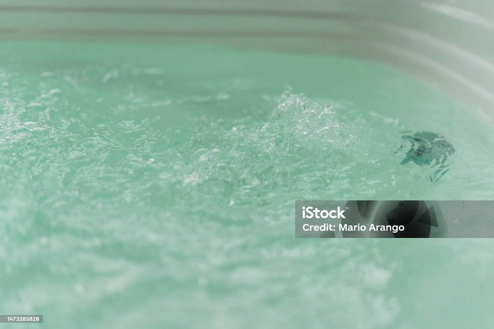
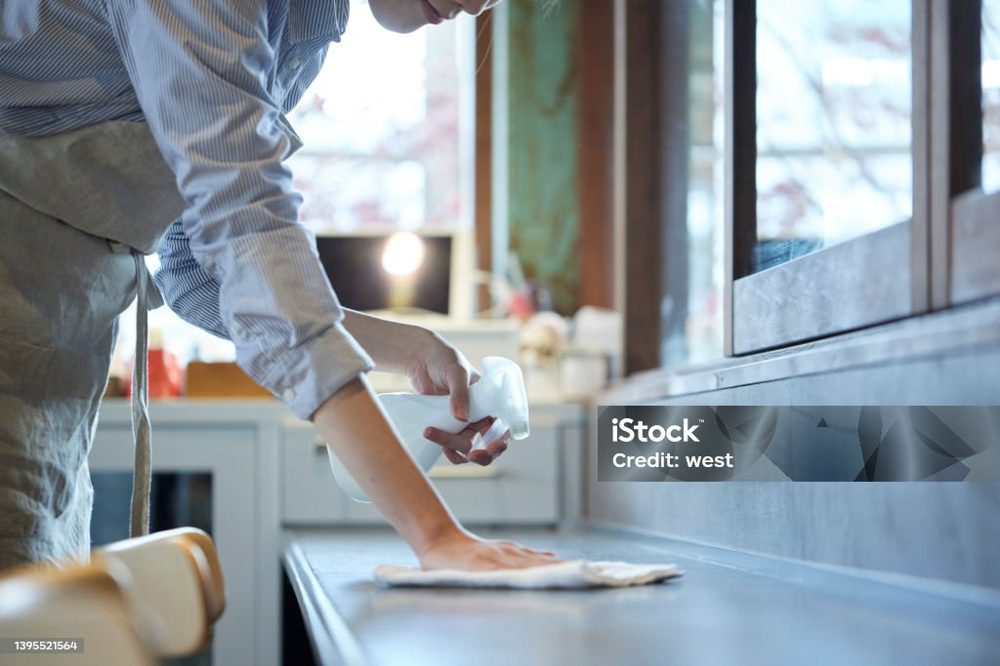
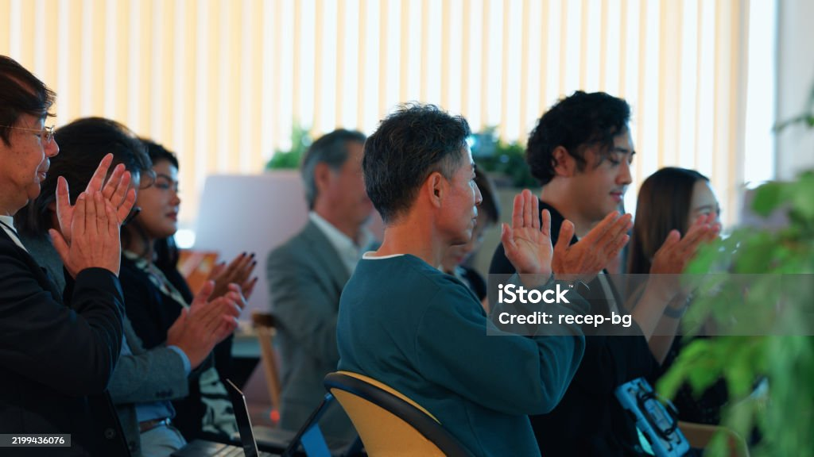

他社の1日型デイ
入浴・長時間の安心・休息
SERVICE
既存の事業所の価値を活かしながら、介護の次の選択肢をつくる。
SERVICE CONCEPT
日本の高齢者人口は2040年まで拡大を続けます。現在、デイサービスは「数が飽和している」と言われますが、全国平均稼働率は約70%にとどまっています。この30%のすき間が意味するものは、市場の飽和ではなく「選ばれるためのサービスの危機」です。
介護保険制度から26年が経過し、多くの事業所が「入浴・食事・日々の安全な見守り」という基礎的な生活援助に全力を注いできました。しかし、経営者の高齢化や慢性的な人手不足、そして「時間枠の制約」により、現場のプロフェッショナルが本来やりたいはずの「科学的根拠に基づいた健康化予防（日常・栄養・運動）」や「一人ひとりに向き合った徹底的な健康管理」にまで、時間とリソースを割けない構造的な課題があります。
このスタッフの高い専門性を連携なく発揮できる、新しいステージの事業所を作っていく必要があります。
PROJECT
要介護者の上限単位数のサービス利用率は平均60%程度。つまり、多くの方が「残り40%の予算枠」を残しています。これは、サービスが不要だからではありません。「自分のライフスタイルや、本当に求める目的に合致した選択肢」と出会えていないからです。この眠れる40%の枠こそが、私たちがシニアの人生に貢献できる大いなる余白です。
ご利用者様は、他社様の1日型デイで「手厚い入浴」や「長時間の安心できる滞在」という大切な生活基盤を十分に満たしている場合もあります。しかし、そこだけではどうしても補いきれないのが、「高度な運動機能」と「データに基づく徹底した健康管理」です。
MARUTTOは「他社の1日型デイを使いながら、余っている40%のすき間時間で、足りない運動と健康管理を補う」というハイブリッド利用を提案します。
既存のデイサービス様は、お互いの強みを活かしてシニアを支える「最高のパートナー」と考えています。

入浴・長時間の安心・休息
+
データ健康管理・高密度な運動・食事/口腔ケア
HOME CARE PROJECT
OVERVIEW
目的：要介護３程度の重度化予防
健康データ管理：バイタル測定・全身チェック／機能データの可視化
運動量：個別機能訓練、集団運動、屋外活動
食事提供：あり／嚥下機能チェック・口腔訓練連動型
LOCATION
〒000-0000
東京都港区麻布台 0-0-0
【港区の補助的拠点】地価の壁が生んだ「運動の機会損失」
構造課題が起きているのが、「港区」です。
港区は、シニア層の健康意識や購買力が高いエリアである一方、地価があまりにも高すぎるため、十分な面積でスペックや専門性を確保した「本当の運動含有型デイサービス」の参入が困難でした。結果として、地域の高齢者の方々は「本当はもっと身体を動かしたい、健康を維持したい」と願いながらも、その機会を損失しているのが実態です。
MARUTTOはこの港区に１号店を開設しました。


私たちの事業所は単なる施設ではなく、ご利用者様に勇気、元気、優しさをお渡しできる場所になること、そしてお一人おひとりの手を握って心に火を灯すこと、すなわちエンパワーメントする「パワースポット」でもなければなりません。
学生やプロ以外にはできない「医療的・科学的視点」をご提供するため、データに基づくプロフェッショナル・コミュニケーションを徹底します。
データドリブン・バイタルチェックにとどまらず、全身の皮膚状態、定期的な身体機能テスト、体重・体組成の推移等をデータ化します。
ミーティング時間の７割以上をご利用者様のこと（データや次の生活の提案等）に費やします。「今日楽しそうでした」という定性コメントではなく、「今週は歩行スピードが0.1秒向上したため、次の社会参加を提案しよう」という会話が飛び交う組織を作ります。